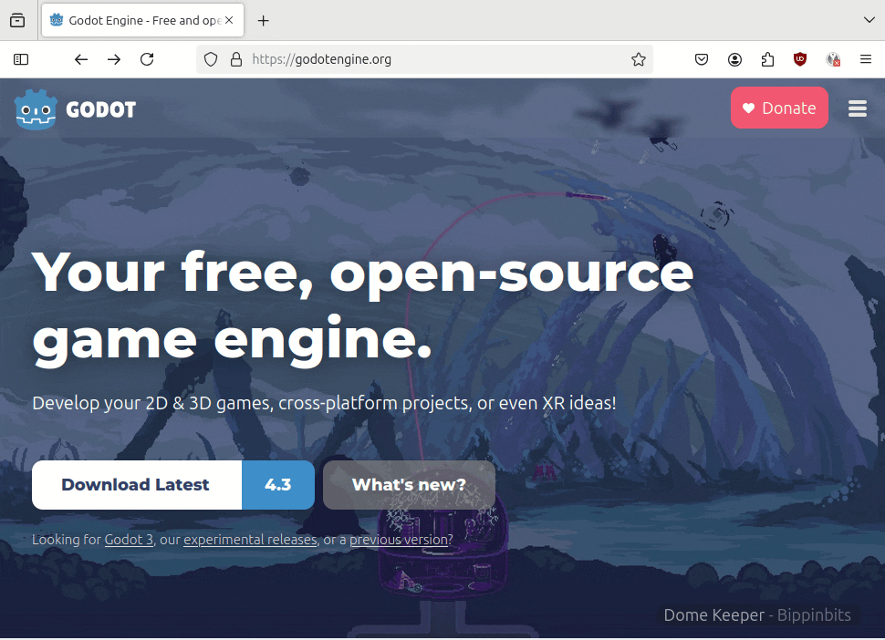
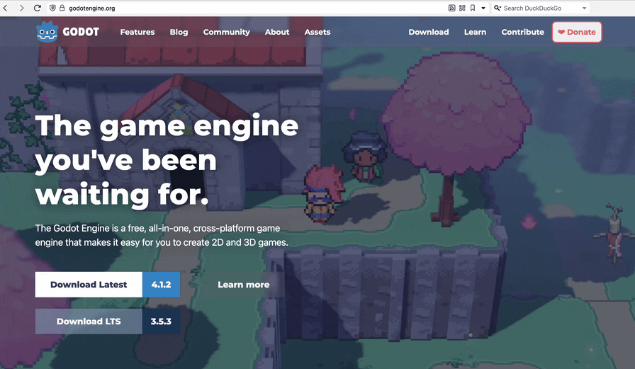
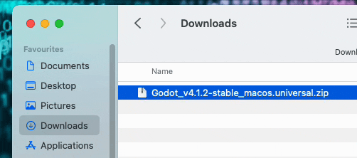
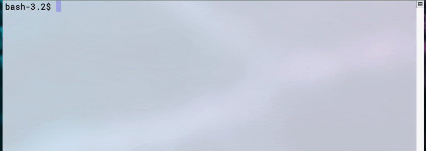

0 - Installasjon
Velg en metode å installere på.
OBS! Ikke oppdater Godot når du er midt i et prosjekt –
dette kan føre til ekstra arbeid. Om du jobber i en gruppe, kan dere
bruke ulike operativsystemer, så lenge alle har samme versjon av Godot
installert.
Linux
Metode 1: Installer fra nettside
Gå til https://godotengine.org/ og last ned ønsket version.

Pakk ut .zip-filen. Godot kan kjøres fra hvor som helst, så legg den et sted som passer for å holde maskinen ryddig.
Metode 2: Installer via en pakkebehandler
Godot er også tilgjengelig i en rekke pakkebrønner. Bare pass på at du laster ned riktig versjon.
Mac
Metode 1: Installer fra nettside
Gå til https://godotengine.org/ og last ned ønsket version.

Pakk ut .zip-filen og dra Godot.app til Applications-mappen. Eventuelt, hvis du ikke har admin-privilegier, kan du også kjøre Godot ved å dobbeltklikke på Godot.app.

Metode 2: Installer via Homebrew i terminal
Dersom du har Homebrew installert, kan du skrive denne kommandoen i terminalen for å installere:
brew install godot
Andre metoder
Du kan laste ned Godot fra Steam, men dette er ikke anbefalt, ettersom du har mindre kontroll over når oppdateringer installeres.
Du kan også kjøre Godot direkte i nettleseren. Dette er kun en preview og er ikke helt stabil, så denne metoden anbefales ikke for bruk i et prosjekt.